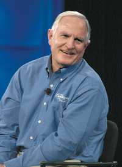
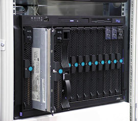
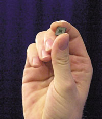
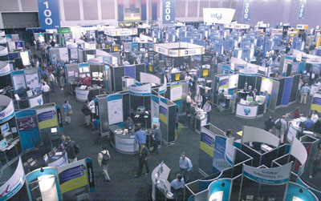

Крупнейший международный конгресс разработчиков аппаратного и программного обеспечения — Форум Intel для разработчиков весенней серии 2003 г. проходил с 18 по 23 февраля в Сан-Хосе (шт. Калифорния), во Дворце съездов Мак-Энери. Здесь собрались ведущие специалисты в области компьютерной и коммуникационной техники, разработчики цифровых устройств и программных продуктов, менеджеры по информационным технологиям. Недаром этот форум считается одной из важнейших международных компьютерных конференций, где определяются направления развития компьютерной индустрии и отраслевые стандарты на несколько лет вперед. С недавнего времени такие форумы проводятся не только в США, но и в Европе, на Тайване, Китае, а с прошлого года и в России. Кстати, в октябре 2003 г. в Москве пройдет уже второй IDF.
Девизом нынешнего форума в Сан-Хосе можно по праву считать три буквы «C» — Computing, Communications, Convergence. Не секрет, что в конвергенции вычислительных и коммуникационных технологий корпорация Intel (http://www.intel.com) отводит себе центральное место.
Дорогой инноваций
Несмотря на всю серьезность мероприятия, атмосфера на форуме царила вполне дружелюбная и непринужденная. Докладчики часто шутили и даже подтрунивали друг над другом. Так, открывая форум, вице-президент и главный директор по технологиям Intel Патрик Гелсингер сказал, что хотя текущий IDF по счету 13-й, он предлагает считать его 14-м. А вот главу корпорации — главного исполнительного директора Intel Крейга Барретта — он поначалу представил как доктора Fish and Chip’s. Игра слов по поводу «чипов», надеюсь, всем понятна, а вот Fish связано с тем, что г-н Барретт, оказывается, заядлый рыбак. Как оказалось, глава Intel обладает не меньшим чувством юмора и в долгу не остался. Он припомнил, как на прошлогоднем IDF Гелсингер осваивал самокат Ginger (Segway Human Transporter). Шутками, конечно, дело не ограничилось.
|  | Главный исполнительный директор Intel Крейг Барретт на открытии IDF.
|
В своем ключевом докладе доктор Барретт, в частности, заявил, что популярность новейших технологий, в основе которой лежит технический прогресс в области разработки полупроводниковых устройств в соответствии с законом Мура, ничуть не спадает. Он также объявил о намерении корпорации вложить 2 млрд долл. в модернизацию действующей фабрики Fab 12 в Чандлере (шт. Аризона), которая станет пятым в мире предприятием Intel по изготовлению 300-мм полупроводниковых пластин. По завершении модернизации, которое намечено на конец 2005 г., на фабрике будет применяться 65-нм производственный процесс. Модернизация производственных мощностей призвана еще раз подтвердить действенность закона Мура выпуском продукции, сочетающей в себе вычислительные и коммуникационные возможности и обеспечивающей самый высокий уровень окупаемости средств, вкладываемых пользователями в ее приобретение.
Выпуск пластин диаметром 300 мм резко снижает себестоимость полупроводниковых устройств по сравнению с действующим стандартом изготовления пластин — 200 мм. Общая площадь полупроводящей поверхности 300-мм пластины на 225% (т. е. более чем вдвое) превышает аналогичный показатель 200-мм пластины, а количество печатных схем (т. е. отдельных вычислительных элементов) повышается на 240%. Укрупнение пластин снижает не только удельную себестоимость микросхем, но и потребление ресурсов в производственном процессе: так, удельное потребление энергии и воды на фабрике, изготавливающей 300-мм пластины, на 40% ниже, чем на аналогичной фабрике по производству 200-мм пластин. Совокупная производственная мощность пяти предприятий Intel аналогична мощности десятка фабрик, продолжающих изготовление пластин по 200-мм технологии.
В своем докладе глава корпорации упомянул и недавно представленное Intel устройство для мобильной телефонии, получившее название «беспроводной Интернет в одном кристалле», которое отличается низким энергопотреблением в сочетании с высокой производительностью объединенных в нем вычислительных и коммуникационных средств. Другим примером того, как средства, вложенные в передовые технологии, приносят максимальную отдачу, стала технология Centrino для мобильных ПК. По словам докладчика, ее освоение открывает путь к появлению мобильных ПК нового поколения, призванных в корне изменить сам стиль работы на мобильном компьютере, беспрецедентно расширив горизонты свободы перемещения без ограничений, связанных с проводным подключением. Заметим, что технология Centrino была официально объявлена чуть позже — 12 марта на выставке CeBIT’2003.
По словам доктора Барретта, возможности Intel как лидера индустрии высоких технологий проявятся в текущем году и в дальнейшем совершенствовании ныне выпускаемой продукции, в частности, в ускоренном переходе на 90-нм производственную технологию с выпуском процессоров следующего поколения для настольных и мобильных ПК. Изготовление по 90-нм технологии приведет к уменьшению габаритов процессора, повышению производительности, а также к продлению срока автономной работы мобильного ПК и появлению других функций, весьма важных для пользователей мобильных ПК. Разработанный Intel 90-нм производственный процесс в дальнейшем послужит основой и для изготовления важнейших компонентов коммуникационного оборудования.
В своем докладе Крейг Барретт остановился также на ряде проектов, призванных расширить возможности современных технологий и открыть новые горизонты в областях их применения, с тем чтобы сохранить за корпорацией Intel передовые позиции в ключевых областях технического прогресса и тех сегментах рынка, направления развития которых определяются нуждами пользователей. Открывая новые перспективы, этот уровень инновационной деятельности ставит перед разработчиками и принципиально новые задачи. Речь прежде всего идет о поиске нетрадиционных решений для обеспечения безопасности, разработки ПО, совместимого со множеством устройств, проектирования и выпуска продукции, отличающейся простотой в эксплуатации.
Компьютеры
Именно на IDF Spring 2003 вицe-прeзидeнт и один из генеральных менеджеров подразделения Mobile Platforms Group корпорации Intel Ананд Чандрасехер впервые сообщил о грядущем анонсе новой технологии Centrino для мобильных ПК. Как показали тесты на основе популярных приложений, ноутбуки, в которых используется технология Intel Centrino, с тактовой частотой 1,6 ГГц характеризуются более высокой производительностью и более длительным временем автономной работы, чем аналогичные устройства на базе процессора Pentium 4-M для мобильных ПК с тактовой частотой 2,4 ГГц. Технология Intel Centrino для мобильных ПК — это процессор Pentium M, набор микросхем 855 и сетевой интерфейс Pro/Wireless 2100.
Во втором полугодии будет начат выпуск (на базе 90-нм технологии) процессоров Prescott и процессоров второго поколения для технологии Intel Centrino для мобильных ПК. В Prescott будет реализован ряд усовершенствований в технологии Hyper-Threading и микроархитектуре NetBurst. Архитектура этого кристалла масштабируется до 4—5 ГГц. Процессор будет иметь системную шину с тактовой частотой 800 МГц и кэш-память второго уровня объемом 1 Мбайт. В него включено 13 новых инструкций, в том числе команды преобразования чисел, комплексной арифметики, видеокодирования и т. д. Процессор второго поколения, рассчитанный на технологию Intel Centrino для мобильных ПК, будет отличаться от своего предшественника более высокой тактовой частотой, а также рядом архитектурных усовершенствований, повышающих общую производительность системы.
Помимо высокопроизводительных процессоров, Intel также планирует выпустить в первом полугодии два новых набора микросхем, известных пока под кодовыми названиями Springdale и Canterwood. Они разработаны как основа для сбалансированных платформ с расширенными функциональными возможностями, отвечающими потребностям пользователей домашних и офисных ПК. Набор микросхем Canterwood будет поддерживать технологию Hyper-Threading и отличаться рядом новых функций, в частности, поддержкой двухканальной памяти DDR400, высокоскоростной системной шиной с тактовой частотой 800 МГц, встроенным интерфейсом AGP 8x и контроллером Serial ATA/RAID. Платформы на базе Canterwood предназначены для высокопроизводительных настольных ПК с процессорами Pentium 4.
Набор микросхем Springdale ориентирован на обеспечение высокой производительности, стабильности и надежности корпоративных настольных ПК. Из его особенностей следует отметить встроенную графическую подсистему нового поколения, программную реализацию RAID, новую архитектуру, повышающую производительность при работе в сети стандарта Gigabit Ethernet, поддержку двухканальной памяти DDR400 и технологии Intel Stable Driver.
Кроме того, на форуме была анонсирована программа под названием Granite Peak, предусматривающая сохранение совместимости наборов микросхем Intel с новейшими процессорами корпорации для настольных и мобильных ПК в течение шести кварталов. Эта программа призвана помочь корпоративным ИТ-подразделениям поддерживать стандартизованные аппаратные и программные конфигурации в течение более длительного времени.
Не секрет, что путь дальнейшего развития отрасли проходит через ускорение темпов массового внедрения в корпоративную и коммуникационную инфраструктуру новейших серверных платформ, сетевых средств и устройств хранения данных. В своих выступлениях старший вице-президент корпорации Майк Фистер и исполнительный вице-президент Шон Мэлоуни особо выделили появление таких технических новинок, как архитектура PCI Express и Itanium, технология Hyper-Threading и модульные коммуникационные средства.
Планы Intel, реализация которых намечена на 2004 г., предусматривают выпуск наборов микросхем, устройств хранения данных и коммуникационных средств, обеспечивающих полную поддержку технологии PCI Express. В планы корпорации на будущий год входит, в частности, выпуск наборов микросхем с поддержкой PCI Express и памяти типа DDR2 для серверов с четырьмя процессорами Xeon MP (Twin Castle) и двумя процессорами Xeon (Lindenhurst). С их выходом ассортимент наборов микросхем производства корпорации Intel для серверных платформ уровня предприятия станет действительно полным.
Напомним, что PCI Express представляет собой архитектуру высокоскоростного последовательного соединения компонентов ввода-вывода общего назначения на основе единого стандарта, позволяющего объединить множество межсоединений ввода-вывода на одной платформе. Необходимость резко расширить пропускную способность на системном уровне, равно как и нарастить функциональные возможности сообразно потребностям следующего десятилетия, возникла в результате появления принципиально новых вычислительных моделей, требования которых выходят далеко за рамки традиционной шины PCI и компьютерной платформы в целом: это рост тактовой частоты процессоров до уровня свыше 10 ГГц, ускорение быстродействия памяти средств обработки трехмерной графики, наращивание пропускной способности сетей Ethernet до одного и даже десятка гигабит, внедрение широкополосных и мультимедийных средств, переход платформы уровня предприятия на последовательную компоновку межсоединений. Спецификация PCI Express была утверждена и обнародована в июле 2002 г. организацией PCI-SIG (Peripheral Component Interconnect-Special Interest Group, http://www.pcisig.com), которая взяла на себя функции по ее продвижению и технической поддержке в масштабах всей отрасли.
Заметим, что архитектура PCI Express обеспечивает полную совместимость и взаимодействие с такими технологиями подключения компонентов корпоративной инфраструктуры, как InfiniBand и Ethernet. Все эти достоинства способствуют снижению стоимости готовых систем с одновременным ростом их надежности.
Ближайшие планы корпорации предусматривают выпуск к концу 2003 г. процессоров Xeon (Nocona) для двухпроцессорных серверов и рабочих станций, произведенных по технологии с проектной нормой 90 нм. На III квартал текущего года также намечен выпуск новинок для двухпроцессорных серверов и рабочих станций со встроенной кэш-памятью объемом 1 Мбайт. К выпуску в 2004 г. готовятся две новинки для многопроцессорных серверов: процессор Xeon MP с кэш-памятью объемом 4 Мбайт и еще один процессор (Potomac), выполненный по технологии с проектной нормой 90 нм. Планы в отношении Itanium 2 предусматривают выпуск во втором полугодии 2003 г. версии Deerfield с пониженным энергопотреблением. Показатели производительности новой модели будут аналогичны современным процессорам Itanium 2 для высокопроизводительных двухпроцессорных компьютерных систем и целевых интерфейсных приложений, но потребление энергии будет сокращено в два раза. На 2004 г. намечен выпуск процессора Itanium 2 со встроенной кэш-памятью третьего уровня объемом 9 Мбайт, а на 2005 г. — процессора с двойным ядром под кодовым наименованием Montecito.
|  | Модульный сервер на базе процессоров Intel Xeon.
|
Новый интерфейс устройств хранения данных Serial ATA оказался в центре внимания форума. В частности, здесь был представлен ряд устройств, относящихся к опубликованной в августе 2001 г. спецификации Serial ATA 1.0. Кроме того, здесь были впервые продемонстрированы устройства на основе усовершенствованной спецификации Serial ATA II, опубликованной в окончательной версии в октябре 2002 г. на Форуме Intel для разработчиков в Токио.
По мнению экспертов, такое внимание к технологии Serial ATA на форуме связано с сообщением о том, что рабочая группа Serial ATA II и ассоциация SCSI Trade Association (STA) договорились о совместимости технологии Serial Attached SCSI с дисковыми накопителями SATA на уровне системы. В перспективе это сотрудничество должно дать самые широкие возможности для конфигурирования систем и предоставить множество преимуществ производителям компьютеров и специалистам по ИТ. Обе группы имеют своих представителей и определенное влияние в группе T10, занимающейся разработкой стандарта SCSI в международном комитете ANSI по стандартам в области ИТ. Группы предполагают, что первые системы на основе новой технологии появятся в 2004 г.
В рамках форума ассоциация PCMCIA объявила о разработке новой спецификации под кодовым названием Newcard, представляющей собой новый этап развития технологии PC Card. Новая спецификация наследует все положительные черты PC Card, позволяя при этом уменьшить устройства расширения, повысить их быстродействие, снизить себестоимость и реализовать поддержку современных технологий последовательного ввода-вывода, в частности, USB 2.0 и PCI Express. В разработке шинной технологии, являющейся частью стандарта Newcard, наряду с PCMCIA участвуют два других важнейших отраслевых комитета — USB Implementers Forum (USB-IF) и PCI-SIG. Применение новой технологии позволит уменьшить габариты компьютеров и сделает возможным создание закрытых систем с внешним подключением устройств расширения. С точки зрения потребителей преимущество новой спецификации — взаимная совместимость плат расширения для мобильных и настольных компьютеров, подобно тому, как можно использовать с мобильными и настольными ПК одни и те же устройства с интерфейсом USB. Выход спецификации ожидается в нынешнем году.
Коммуникации
В рамках Форума IDF представители Intel рассказали о ряде реализуемых корпорацией программ поддержки отрасли, призванных создать оптимальные условия для работы мобильных пользователей. В частности, фонд Intel Communications Fund уже инвестировал 25 млн долл. в более чем полтора десятка компаний, работающих в сегменте беспроводных сетей, с тем чтобы ускорить развертывание таких сетей во всем мире. Корпорация Intel также сотрудничает с гостиничными сетями, провайдерами телекоммуникационных услуг и предприятиями розничной торговли и реализует широкую программу проверки общедоступных мест доступа к сетям стандарта Wi-Fi, предназначенных для использования с технологией Centrino для мобильных ПК. К концу года планируется протестировать несколько тысяч таких мест доступа.
Корпорация также уделяет большое внимание интеграции вычислительных и коммуникационных функций в беспроводных карманных устройствах, в том числе в мобильных телефонах. Усилия Intel по разработке высокопроизводительных интегрированных полупроводниковых компонентов для беспроводной связи ускоряют переход от телефонов, предназначенных исключительно для голосовой связи, к современным аппаратам, сочетающим голосовые функции с возможностями работы с данными.
Ведущие производители мобильных телефонов, в том числе компании Maxon Telecom, MiTAC International и Hitachi, намерены использовать в будущих моделях своих телефонов процессоры Intel на базе технологии XScale. Так, корейская компания Maxon, проектирующая и разрабатывающая свои модели в Дании, первой сообщила о планах выпуска современного аппарата GSM/GPRS на основе недавно представленного процессора Intel PXA800F для мобильных телефонов (известного ранее как Manitoba). Новинка, получившая название Maxon MX-E20, представляет собой компактный раскладной телефон с двумя цветными дисплеями (внутренним и внешним). Среди других функций модели следует отметить воспроизведение видео, встроенный цифровой фотоаппарат, поддержку сообщений MMS и встроенные игры. Напомним, что процессор объединяет вычислительное ядро, DSP, флэш-память, GSM/GPRS и блок управления энергопотреблением.
|  | Процессор PXA800F — ключевой элемент Intel Personal Internet Client Architecture.
|
Смартфон MiTAC Mio 8380, выполненный в складном корпусе, оснащен процессором PXA262, который объединяет в одном компоненте 32 Мбайт флэш-памяти и процессор на основе технологии Intel XScale с тактовой частотой 200 МГц. MiTAC Mio 8380 — первый складной телефон, оснащенный встроенным цифровым фотоаппаратом с матрицей в 110 тыс. пикселов и объективом с функцией zoom. На базе процессора с архитектурой Intel XScale выполнена и представленная ранее в этом году модель стандарта CDMA Hitachi Multimedia Communicator, поставки которой начнутся в нынешнем году.
Кроме того, Intel и Microsoft объявили о начале поставок эталонной платформы мобильных телефонов Intel PXA262, работающей под управлением ОС Windows Smartphone. Платформа построена на основе процессора с архитектурой Intel XScale и флэш-памятью, встроенной в процессор с использованием передовой многослойной технологии Intel MCP.
В своем выступлении Шон Мэлоуни особо обозначил роль корпорации в обеспечении инфраструктуры Интернета такими компонентами, как коммуникационные средства бытового и корпоративного назначения, устройства доступа и обслуживания периферийных сегментов Интернета, оборудование для магистральных оптоволоконных линий.
На прошедшем форуме Intel представила три новых сетевых процессора для широкого круга пользователей. Микросхемы IXP420, IXP421 и IXP422 обладают широким спектром интегрированных функций для безопасной передачи данных и голоса, необходимых для разработки высокопроизводительных и экономически эффективных устройств. Базируясь на технологии XScale, эти процессоры сочетают запас производительности для обработки ресурсоемких приложений с преимуществами стандартной архитектуры — кратчайшими сроками вывода готовой продукции на рынок. Семейство процессоров IXP4хх обеспечивает производителям оборудования возможность выбора интерфейсов для подключения к территориально-распределенным и локальным компьютерным сетям с помощью самых разных устройств. Сетевой процессор IXP422 предназначен для установки в шлюзы и точки беспроводного доступа, размещаемые в жилых помещениях, а также в маршрутизаторы и коммутаторы, эксплуатируемые малыми и средними коммерческими предприятиями. Помимо прочего, этот процессор поддерживает функции шифрования. Сетевой процессор IXP421 предназначен для устройств, обеспечивающих передачу данных и голоса по протоколу IP, а сетевой процессор IXP420 оптимизирован под широкополосный доступ и предназначен для таких устройств, как небольшие шлюзы и используемые в малых офисах маршрутизаторы в сочетании с внешними модемами.
Процессоры данного семейства уже внедряются ведущими поставщиками сетевого оборудования. Так, компания Linksys (http://www.linksys.com) уже объявила о применении сетевых процессоров IXP422 в точках беспроводного доступа нового поколения (Linksys Wireless Access Points). Кроме того, совместно с корпорацией Microsoft ведется работа по портированию интегрированной операционной системы Windows CE.NET под сетевой процессор IXP425.
Стоит отметить, что сетевые процессоры и процессоры на основе архитектуры Intel предназначены для работы в составе модульных коммуникационных платформ в соответствии со спецификацией AdvancedTCA (Advanced Telecommunications Computing Architecture — усовершенствованная телекоммуникационно-вычислительная архитектура), которая определяет размеры и форму системных плат и других компонентов коммуникационного оборудования, способствуя тем самым сокращению сроков проектирования.
Для магистральных оптоволоконных линий в Intel разработана технология применения лазеров с перестройкой частоты, освоение которой, как ожидается, позволит значительно удешевить и повысить гибкость внедрения решений на основе мультиплексирования по длине волны повышенной плотности (Dense Wavelength Division Multiplexing, DWDM). По словам представителей корпорации, применение данной технологии способно существенно расширять пропускную способность сетей по мере надобности.
Конвергенция
В своем заключительном докладе на форуме Патрик Гелсингер рассказал о планах корпорации ускорить процесс интеграции вычислительных и коммуникационных технологий за счет перспективных исследований в области производства и применения полупроводниковых интегральных микросхем. По словам Гелсингера, полупроводниковые технологии, позволяющие интегрировать вычислительные и коммуникационные функции, помогут перенести дальнейшее воплощение закона Мура в новые сферы, что будет приносить пользователям новые возможности и преимущества еще в течение по меньшей мере десяти лет.
Гелсингер также рассказал о некоторых технологиях, находящихся в стадии разработки в исследовательских лабораториях Intel, в том числе о полупроводниковых радиосхемах и так называемых контекстно зависимых вычислениях. Intel занимается разработкой радиосхем на основе технологии производства КМОП-структур с низким энергопотреблением. Кроме того, Гелсингер отметил, что сегодня корпорация очень близка к достижению своей цели — разработать так называемые перенастраиваемые радиосхемы, которые смогут автоматически обнаруживать различные беспроводные сети (в том числе стандарта 802.11, Bluetooth и Ultra Wideband) и подключаться к ним. Это позволит любому устройству, разработанному на базе таких микросхем, выполнять коммуникационные функции во множестве различных сетей.
Кроме того, Гелсингер сообщил, что в корпорации Intel успешно идут исследования, направленные на реализацию концепции адаптации прикладного ПО к изменению географического положения за счет интеграции таких технологий, как глобальное позиционирование и беспроводные локальные сети. Например, благодаря «контекстно зависимым» приложениям пользователи смогут получать самую свежую информацию о погодных условиях и состоянии дорог, менять свои планы и маршруты — все это можно будет делать быстро и в любом месте.
В течение всей работы IDF проходила выставка новейших компьютерных и коммуникационных технологий, что позволяло всем участникам форума увидеть воочию последние новинки и технологии.
|  | Выставка новейших компьютерных и коммуникационных технологий.
|